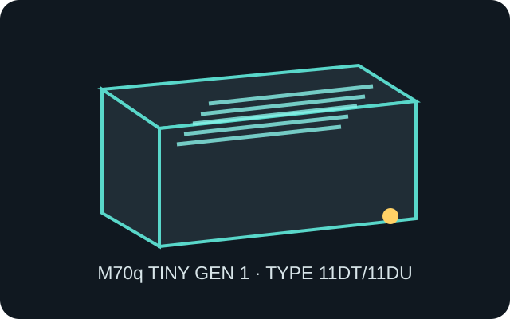

[ IDENTIFIED SYSTEM // LENOVO TINY ]
Lenovo ThinkCentre M70q Tiny Gen 1
Type 11DT/11DU, 179 × 182.9 × 36.5 mm (W × D × H), 1 L-class chassis; verify the machine-type label for exact build.

MODEL / TYPE: M70q Tiny Gen 1, machine types 11DT/11DU; not interchangeable by appearance with later M70q generations.
Specifications & fit
| Dimensions / type | 179 × 182.9 × 36.5 mm (W × D × H); Tiny proprietary desktop system. |
|---|---|
| Board / power | Lenovo proprietary system board and internal layout; external Lenovo 65 W or 90 W adapter depending on configuration. Not an ATX or Mini-ITX case. |
| Drive bays | One M.2 2280 storage position and an optional 2.5-inch SATA drive position with the matching cable, bracket and cover; exact combination is configuration-dependent. |
| Expansion | No standard PCIe card slot. M.2 positions serve storage and wireless; rear configurable-port options are model-specific I/O modules, not card expansion. |
| Thermal / maintenance compatibility | Keep intake/exhaust vents clear, especially in vertical or VESA mounts. Disconnect adapter before removing the tool-less cover; retain drive cage, SATA lead, fan duct and screws as a matched assembly. |
Compatibility & preservation notes
Use the machine type and serial-specific parts list before ordering a board, fan, adapter or storage cage. Later Tiny generations can look similar but have different board, port and bracket layouts.
- Do not install a desktop CPU cooler or standard PSU; the board, fan assembly and external DC power path are proprietary.
- Check VESA bracket orientation and leave both vent fields unobstructed; remove dust from the fan and heatsink during service.
Manufacturer specifications & service sources
- Lenovo PSREF — ThinkCentre M70q Tiny 1st GenProduct specifications, dimensions and platform options; confirm machine type and configuration.
- Lenovo Support — Find and view product manualsManufacturer instructions for locating the matching M70q Hardware Maintenance Manual by machine type.